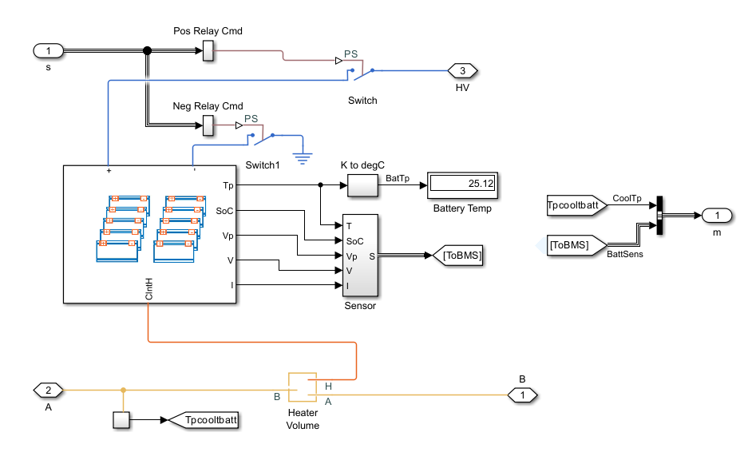
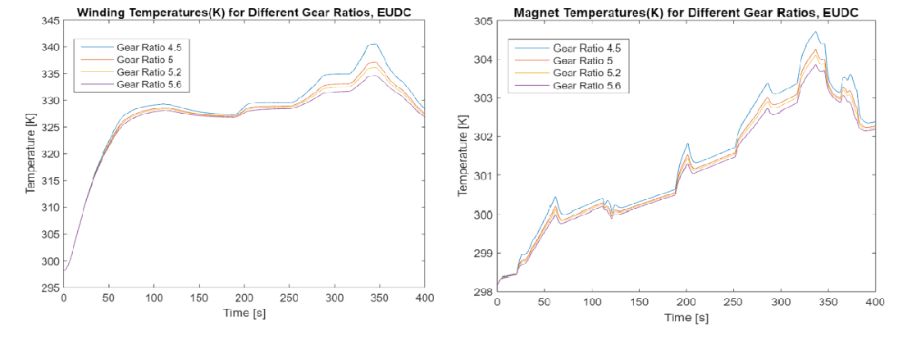

Examples
Each example opens a quick-setup page with the exact preset or test bench, model selection, Live Script, inputs, and expected result types. Component and vehicle-model pages provide the reusable detail behind each one.
Battery Workflows

Size Battery Pack for Electric Vehicle
The battery is one of the most critical and expensive components on a BEV — it powers propulsion, HVAC, coolant pumps and heaters, and lighting. A larger pack improves range but adds weight, volume, cost, and packaging and safety constraints, and the extra mass itself eats into the range gain.

Build Virtual Sensor for Battery Management System
In a battery pack, voltage, current, and temperature sensors feed the battery management system (BMS). Physical temperature sensors are costly and hard to install throughout a large pack, so a numerical estimate of cell temperature can replace or back them up if one fails.
Motor Drive Workflows

Generate Motor and Inverter Loss Maps
To model a permanent magnet synchronous motor (PMSM) inside a fast system-level thermal simulation, you replace the detailed machine with a loss map. This workflow generates that map from an FEM-characterized PMSM under field-oriented control.

Analyze Motor Drive Thermal Durability
Drive-unit thermal management is critical for durability and life estimation — validating a design under extreme loading early reduces the risk of failure late in hardware development.

Estimate Inverter Power Module End of Life
Inverter life is governed by thermal fatigue of the power-module solder joints and wire bonds, seen as a rise in thermal resistance beyond a degradation limit. Suppliers quote cycles-to-failure only for a standard test cycle (for example 1 s on, 1 s off), so translating that to a real driving scenario is difficult.

Select Gear Ratio for Electric Vehicle
A fixed gear ratio is usually the most cost-effective drive-unit choice for a BEV, but the ratio must let the motor meet the duty cycle without overheating.
Vehicle Workflows

Estimate Electric Vehicle Range
Range anxiety, cost, and safety are the central challenges in BEV adoption. Real-world range depends heavily on conditions: hot versus sub-zero ambient temperatures, HVAC load, and whether the driver profile is aggressive or relaxed.